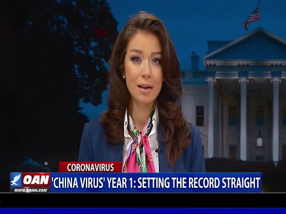

‘China Virus’ Year 1: Setting the Record Straight
OAN Newsroom
President Trump told Americans he hopes everyone remembers him as they get their COVID-19 vaccine.His comments came as the nation marked one year since the World Health Organization declared COVID-19 a global pandemic.
One America’s Chief White House Correspondent Chanel Rion explains how the Biden White House is using that benchmark to take credit where it isn’t due.
Posted On: 2021-03-12T00:00:00

Content Date: 2021-03-12
Download Date: 2021-04-16
Document ID: L0C049Y2K